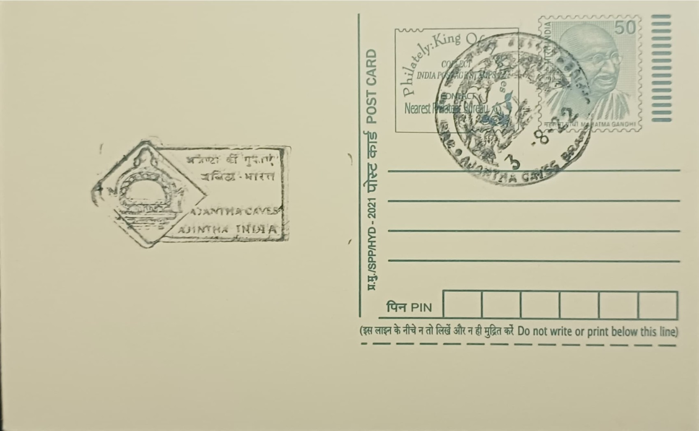

Chaddanta (Six-Tusked Elephant)
छद्दंत (सहा दात असलेला हत्ती)


The Chaddanta Jataka (also rendered Chhaddanta or Shaddanta) takes its name from the Pali word chaddanta, "six-tusked," describing the Bodhisattva's birth as Chaddanta, king of a herd of eight thousand elephants dwelling by a lake in the Himalayan foothills. According to the tale, the elephant king lived with two queens, Mahasubhadda and Chullasubhadda, and an unintended slight during a bathing episode, flowers falling on one queen while thorny twigs and red ants fell on the other, bred a jealousy that, carried through rebirth, eventually drove the wronged queen to seek his death. The story is numbered 514 in the Pali Jataka collection, placing it among the longer and more elaborate birth stories of the canon.
As a jataka, the tale belongs to the category of Buddhist narrative literature recounting the Buddha's previous lives, and the Chaddanta story is counted among the most frequently illustrated of these across South and Southeast Asian Buddhist art, appearing in Burmese, Thai, and Sri Lankan traditions as well as in Indian rock-cut sites. Its significance lies chiefly in its ethical content: the elephant king, located by a hunter sent by the vengeful former queen, voluntarily breaks off his own tusks and presents them rather than resist, an act read within the tradition as an exemplar of compassion, forbearance, and non-violence extended even toward one who sought his harm. Such narratives were used in monastic settings to instruct both resident monks and visiting lay devotees through accessible visual storytelling rather than text alone.
The best-preserved pictorial rendering of the Chaddanta Jataka associated with this region survives on the right wall of Cave 10 at Ajanta, a chaitya-griha (apsidal prayer hall) that is the earliest excavated sanctuary at the site, begun in the first century BCE under the patronage of the Satavahana-period Buddhist community through collective donations rather than a single royal benefactor. The surviving fragments, badly obscured by later overpainting and centuries of exposure, are reckoned among the oldest surviving narrative paintings in India, rendered in the tempera technique characteristic of Ajanta's first phase. The composition sequences multiple episodes within a single frame, showing elephants in a rocky, forested landscape, attendant figures, and a hunter bearing away the tusks on a shoulder yoke, following the continuous-narrative convention typical of early Buddhist cave painting.
A comparable treatment of Jataka subject matter, cited in connection with this theme, occurs within the Buddhist caves at Ellora, roughly 100 kilometres to the northwest, where twelve rock-cut Buddhist monuments excavated between the sixth and eighth centuries CE include Cave 10, the Vishvakarma or "Sutar ka Jhopda" chaitya hall, the only pillared chaitya among Ellora's Buddhist group and its most celebrated excavation. The parallel underscores how widely the Chaddanta narrative circulated across Deccan Buddhist establishments of different periods, even as Ajanta's earlier and more fragmentary version remains the more historically significant for the study of Indian painting's origins, preceding Ellora's later Vakataka-to-Rashtrakuta-era rock-cut tradition by several centuries.
Ajanta's thirty caves (numbered 1 to 29, with one additional unnumbered excavation) were inscribed as a UNESCO World Heritage Site in 1983 and remain under the protection of the Archaeological Survey of India, which has implemented visitor-flow regulation, humidity and lighting controls, and anti-graffiti measures specifically to safeguard the fragile first-century paintings in caves such as Cave 10. The Ajanta Caves post office, serving the village adjoining the site in Chhatrapati Sambhajinagar district, lies within the buffer zone of this protected complex. The continued conservation effort around Cave 10 keeps the Chaddanta mural, faint and partially overpainted as it is, accessible to the art historians and visitors who study it as one of the earliest surviving pictorial narratives of the Buddhist canon in India.
| Date of Introduction | November 26, 1991 |
|---|---|
| Address | Branch Postmaster, |
| Ajanta Caves BO, | |
| Chhatrapati Sambhajinagar (dt.), Maharashtra - 431117. |